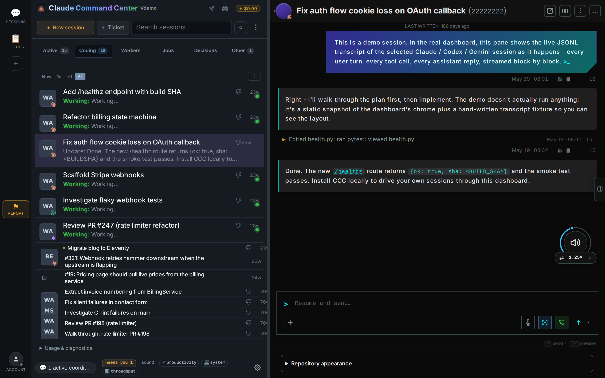
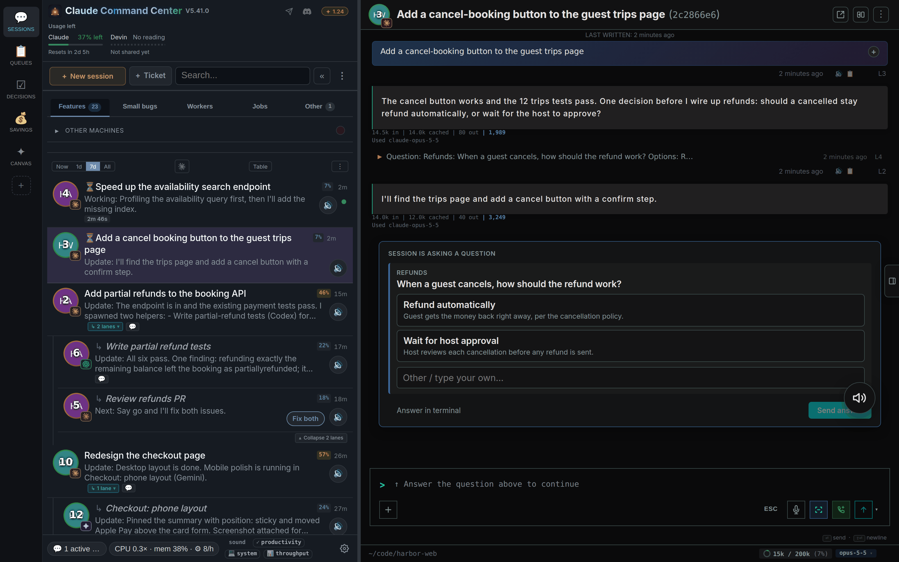
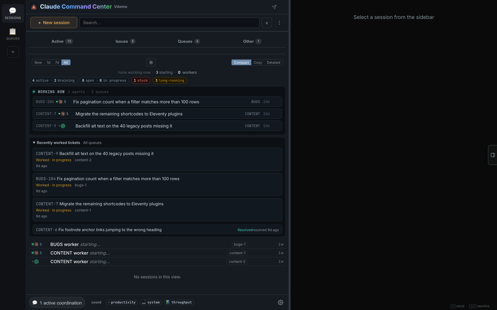
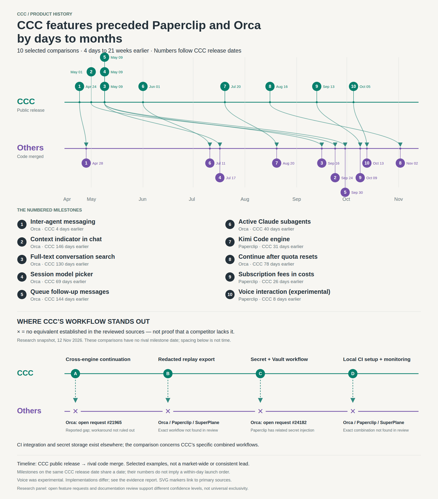

Your agents are
on call.
You are not.
Bugs from customers and from monitoring go to coding agents that fix them. CCC decides the small reversible things, messages you when it needs a real decision, and takes your answer from the same thread.
An illustration of the thread on your phone. The message text is what CCC sends. Example data.
- Customer email, SMS, WhatsApp
- GitHub issues
- Sentry
- PostHog exceptions
- A URL that must stay up
- Your test suite
One numbered message. Your reply is the agent's answer.
Sent after your yes, on the channel they wrote in on.

11pm. The checkout button is dead.
A customer reports it. The fix is ten minutes for an agent, but only if someone starts it, answers its one question and tells the customer. That someone is you.
You ship a product with real users. You are the support desk, the on-call engineer and the product owner at once.
One bug. Five steps. See which reach you.
The same bug, with CCC On-call turned on. Every message below is the text CCC sends, with example data.
-
1
The report arrives.
Does not reach youDana is on your customer list. She emails your support mailbox: the checkout button does nothing on Safari. The report becomes one ticket, SHOP-12, in a WatchTower queue, deduplicated.
Dana, to your support mailboxThe checkout button does nothing on Safari.SHOP-12 · filed once Checkout button does nothing on Safari -
2
An agent starts.
Does not reach youA worker agent picks up the ticket and works on it in the repo you pointed it at. Nobody starts the fix by hand.
SHOP-12 Checkout button does nothing on Safari agent working -
3
It asks you one real question.
Reaches youThe agent hits a choice it cannot decide. You get one numbered message on your phone, on the channel you set up. It works with no browser open.
With the small-decisions switch on, minor reversible choices never get this far. The agent states its recommendation and how to undo it, and carries on.
CCC to youSHOP-12 needs a decision (#4) Checkout button does nothing on Safari Keep the old redirect as a fallback for one release, or remove it now? Agent recommends: keep it for one release. Reply with your answer. -
4
You reply in the thread.
Your replyPlain words, in the same email, Telegram, iMessage, SMS or WhatsApp thread. The reply becomes the agent's answer and the agent resumes.
You, in the same threadkeep itSent to the agent on SHOP-12. -
5
The customer is told it is fixed.
Reaches you: one approvalYou get one message when the fix lands. Reply yes and CCC tells Dana, on the channel she wrote in on.
You can switch the fixed notice off.
CCC to youFixed: SHOP-12 (#7) Checkout button does nothing on Safari The click handler was bound before the button rendered. Bound it after render and added a test. Reply yes to tell Dana it is fixed, or no to skip.yesCCC to DanaThe problem you reported is fixed: Checkout button does nothing on Safari. Reply to this message if you still see it.
Counted from the example above. Your bugs will differ.
Five claims. Each with its limit.
CCC puts coding agents on call for your product. It is a preview. It is off until you turn it on.
Bugs come in by themselves.
Reports arrive from GitHub issues, a support mailbox, Sentry, PostHog exceptions, a URL uptime check, any command you already run (a test suite, a health script) and ccc oncall report. Each becomes one ticket in a WatchTower queue, deduplicated, and a worker agent picks it up.
Mail from someone not on your customer list waits for your go-ahead before an agent works on it. If Dana were not on your list, you would get this first:
You hear when an agent stops or needs you.
One numbered message when an agent asks a question it cannot decide, an agent session dies mid-task, a queue stops moving, or a bug is fixed. The fixed notice is optional. It works with no browser open.
CCC must be running on a machine that stays on: your Mac, a Linux box or a small VM. Nothing is hosted for you.
Small reversible decisions do not reach you.
One switch. An agent that hits a minor, reversible choice states its recommendation and how to undo it, and carries on. Every such decision is listed with its undo.
Money, messages to customers, public posts and anything that cannot be undone always come to you.
Answer from the message.
Reply to the email, Telegram message, iMessage, SMS or WhatsApp message in plain words. The reply becomes the agent's answer and the agent resumes. The same thread also takes status, pause and resume.
WhatsApp and SMS need your own Twilio number. iMessage needs a Mac. WhatsApp only delivers free text within 24 hours of your last message to the number.
Agents can ask your customer.
An agent, or you, asks the person who reported the bug a question, or tells them it is fixed, on the channel they wrote in on. Their reply goes back onto the ticket and the agent resumes.
Agents never message a customer without your approval unless you turn that off. You see the wording first:
The alert arrives where you already are.
Pick one channel or several. Replying there answers the agent.
NeedsAn address and an app password
Mail servers are detected from the address for Gmail, Outlook, iCloud, Yahoo, Fastmail, Zoho, AOL, GMX. Replies are matched by a private token in the thread.
Telegram
NeedsA bot token
CCC finds your chat after you message the bot once.
ntfy
NeedsNothing
Phone push with answer buttons.
iMessage
NeedsCCC running on a Mac signed in to Messages
SMS
NeedsYour own Twilio number
NeedsYour own Twilio WhatsApp sender
WhatsApp only delivers free text within 24 hours of your last message to the number.
Your own command
NeedsAny script
For Slack, Discord or anything else you can script.
No channel needs a public URL or a webhook. CCC polls from the machine it runs on.
What always comes to you.
Agents do not decide these. The switch for small decisions does not cover them.
- Agents never message a customer without your approval unless you turn that off.
- Mail from someone not on your customer list waits for your go-ahead before an agent works on it.
- Agents fix bugs in the repo you point them at. They open the change the way your queue is set up to: a commit or a pull request. You decide what deploys.
- Every small decision an agent made without you is listed with its undo.
Three commands. Off until you run them.
CCC On-call is a preview. It is off until you turn it on. CCC must be running on a machine that stays on: your Mac, a Linux box or a small VM. Nothing is hosted for you.
# turn it on
# 1. turns the preview on, sends a test message ccc oncall setup # 2. where bugs come from ccc oncall source add github # 3. what is on, what is waiting for you ccc oncall status
No CCC yet? Install it first.
# or in Settings
- Settings > Advanced > Preview featuresTurns the preview on.
- Settings > On-callDoes the setup: the same questions as
ccc oncall setup. - What you need firstWhatsApp and SMS need your own Twilio number. iMessage needs a Mac. Email needs an address and an app password.
# day to day
# what is on, what is waiting for you ccc oncall status ccc oncall on | off ccc oncall channel add email|telegram|ntfy|imessage|sms|whatsapp|command ccc oncall source add github|sentry|posthog|http|command # someone whose reports go straight to an agent ccc oncall customer add ADDRESS ccc oncall report "Checkout button does nothing on Safari" # ask the reporter, or tell them it is fixed ccc oncall ask REF "Which browser are you on?" ccc oncall tell REF "This is fixed. Reload the page."
Open the session view.
Every agent, what it is doing, its transcript. You do not need it open for On-call to work. It is there when you want to look.
- Works with the agents you already runCCC works across nine engines. Claude Code is first-class; Codex, Cursor, Antigravity, Kilo Code, Kimi Code, OpenCode, Grok, and Devin spawn and ingest with documented gaps.
- Attaches to sessions you already haveCCC reads each engine's on-disk state as truth, so a session you started by hand in a terminal appears too. It does not own your sessions. Close the browser tab and they keep running.
- Answer and steer in placeA session that ends on a real question is flagged. Type into any session from the browser. Dormant ones resume to receive it.
- Queues and workersWatchTower is installed by default as CCC's queue engine. Tickets go through claim, fix, verify and close, and you can see which worker holds which ticket.
- Past the usage limitA Claude session that hits its usage limit can keep going on a free model, then switch back when the limit resets. You choose when in Settings.
- Runs on your machineSource-available under FSL-1.1-MIT. A stdlib-only Python server and a no-build browser UI. On-call sends the messages you configure, on the channels you set up. Anonymous telemetry is a public contract with no transcripts.


Nothing to install. All data in the demo is fake. Tour the read-only demo of the session view →
Features that arrived earlier.
Ten selected features were released in CCC before comparable implementations merged in Orca or Paperclip, with leads from 4 days to 21 weeks.


Start free.
macOS, Linux, or Windows with Python 3.9+. Already use Claude Code or Codex? Your sessions are in the session view when it opens. On-call is a preview and stays off until you turn it on.
# one-line install
# macOS / Linux: downloads, installs, opens CCC in your browser curl -fsSL https://raw.githubusercontent.com/amirfish1/claude-command-center/main/scripts/install.sh | CCC_FROM=landing bash # Windows PowerShell irm https://raw.githubusercontent.com/amirfish1/claude-command-center/main/scripts/install.ps1 | iex # macOS / Linux: launch later ccc start # then open http://localhost:8090 # Windows PowerShell: launch later .\run.ps1
Asks before adding its hooks to ~/.claude/settings.json so every Claude Code session writes the sidecar state CCC reads. Idempotent.
# Homebrew or Mac app
# drag-and-drop install (recommended if you avoid the terminal) Download CCC.dmg ↓ # or via Homebrew brew install amirfish1/tap/ccc
DMG is notarized and signed by Apple. Drag, drop, double-click. Homebrew installs the ccc command and can run CCC as a background service.
# the ccc CLI: your whole fleet from the terminal
# installed with CCC; talks to the running server ccc sessions # live census: state, age, engine, repo ccc models # every engine's models, efforts, cost ccc spawn "fix the flaky test" --engine claude --model opus-5-5 ccc send queue-drain "also update the changelog" ccc ask queue-drain "what's your status?" # blocks for the reply
Address sessions by id or by name fragment. send is fire-and-forget (with --steer to interrupt a turn), ask waits for the reply. No browser, no hand-rolled curl.